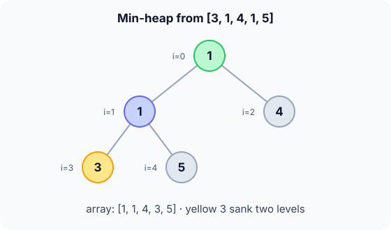

Prerequisites
- Binary tree basics.
- Arrays and index arithmetic.
- Logarithms.
The analogy
Everyday analogy
Think of a company org chart where every manager earns less than the people who report to them (a strange company!). The lowest salary is always at the very top.
A min-heap has that rule: each parent is ≤ its children. It says nothing about siblings or cousins, only parent versus child, and that's just enough to keep the minimum at the root.
How it works
Start with heapify on paper
Heapify [3, 1, 4, 1, 5]: for each parent, from the last one (index 1) back to the root, let it sink below its smaller child while it is bigger. Predict, then open "Check".
Example: predict before you read
Step 1. Index 1 holds 1, with children 1 (index 3) and 5 (index 4). Predict: does it swap?
Check
No. Neither child is smaller than 1 (the other 1 is equal), so it stays: [3, 1, 4, 1, 5].
Step 2. Cover the next line and guess: the root 3 has children 1 and 4. What happens?
Check
3 swaps with the smaller child, 1: [1, 3, 4, 1, 5].
Step 3. 3 is now at index 1, with children 1 and 5. Predict the final heap.
Check
3 > 1, so it swaps again: [1, 1, 4, 3, 5]. Every parent is now ≤ its children.

Quick recall: Before reading further, cover the text above and say out loud: why does heapify start at the last parent and go backwards?
Check your answer
When a node sinks, both of its subtrees must already be heaps. Going from the bottom up guarantees that.
Finish the picture: inserting and reading in order
Insert 0 into [1, 1, 4, 3, 5], then look at the level-order traversal.
- Insert 0 at index 5 (child of index 2). Predict how far it rises.
Check
0 < 4: swap, giving
[1, 1, 0, 3, 5, 4]; 0 < 1 at the root: swap, giving[0, 1, 1, 3, 5, 4]. - Level-order traversal. Predict it without drawing the tree.
Check
It is just the array order: 0, 1, 1, 3, 5, 4. Note it isn't sorted: a heap only guarantees parent ≤ child.
Quick recall: Without scrolling up, say out loud: when inserting, which direction does the new value move?
Check your answer
Up: it starts at the end of the array and swaps with its parent while it is smaller.
The rule in plain words
Heap rule: every parent is ≤ its children; the tree is complete, filled level by level from the left, so it fits in an array.
Heapify: sift down each parent from index $\lfloor n/2 \rfloor - 1$ back to 0. Insert: append, then sift up.
Quick recall: Before you read the code, write the steps of sift-down in your own words. Then check below.
Check your answer
1. Find the smallest of the node and its children. 2. If the node is already the smallest, stop. 3. Otherwise swap with that child and continue from the child's position.
The code
Read this code after you have done heapify by hand. It will make more sense.
void sift_down(int a[], int n, int i) { /* min-heap version */
for (;;) {
int s = i, l = 2 * i + 1, r = 2 * i + 2;
if (l < n && a[l] < a[s]) s = l; /* s = smallest of the three */
if (r < n && a[r] < a[s]) s = r;
if (s == i) return; /* heap rule holds here */
int t = a[i]; a[i] = a[s]; a[s] = t;
i = s;
}
}
void build_min_heap(int a[], int n) {
for (int i = n / 2 - 1; i >= 0; i--) sift_down(a, n, i); /* last parent to root */
}Definition
What you just did, in one line: a min-heap is a complete binary tree, stored in an array, where every parent is less than or equal to its children, so the minimum is at the root.
graph TD
A((1)) --> B((1))
A --> C((4))
B --> D((3))
B --> E((5))
How fast is it?
Quick recall: Before looking at the formula, predict: is building a heap from $n$ values $O(n \log n)$ or less?
Check your answer
Less: $O(n)$, because most nodes are near the bottom and sink only a level or two.
In heapify, about $n/2^{h+1}$ nodes sit at height $h$ and each sinks at most $h$ levels. The total work is bounded by:
$$\sum_{h=0}^{\lfloor \log_2 n \rfloor} \frac{n}{2^{h+1}} \cdot h \;\le\; n \quad\Longrightarrow\quad O(n)$$Insert and remove-min follow one path of a complete tree of height $\lfloor \log_2 n \rfloor$.
| Operation | Cost | Why |
|---|---|---|
| Build (heapify) $n$ values | $O(n)$ | Most nodes sink only a little |
| Insert | $O(\log n)$ | Sift up one path |
| Remove min | $O(\log n)$ | Last leaf to the root, sift down |
| Peek min | $O(1)$ | It's a[0] |
| Search any value | $O(n)$ | Heap order doesn't guide the search |
Warning
Use a strict comparison when sifting. With <=, equal values keep swapping for nothing, and with the wrong child (not the smallest) the heap rule breaks one level down.
Exam tip
Two classics: "build a heap from this array" (bottom-up, start at index $\lfloor n/2 \rfloor - 1$) and "why is building $O(n)$ and not $O(n \log n)$" (most nodes are near the leaves).
Common mistakes
- Building top-down by sifting down from index 0 first, which can leave lower subtrees unheaped.
- Swapping with the first smaller child instead of the smallest child.
- Thinking the heap array is sorted.
Try it yourself
Exercise 1 (warm-up)
Is [1, 3, 2, 7, 4, 5] a valid min-heap?
Hint
Check index 0 against 1 and 2, index 1 against 3 and 4, index 2 against 5.
Answer
Yes: 1 ≤ 3, 2; 3 ≤ 7, 4; 2 ≤ 5.
Exercise 2 (a bit harder)
Heapify [9, 4, 7, 1, 2, 6] into a min-heap. Show the array after each parent is processed. Write your answer down before you open it.
Show answer
Parents are indices 2, 1, 0. Index 2 (7, child 6): swap → [9, 4, 6, 1, 2, 7]. Index 1 (4, children 1 and 2): swap with 1 → [9, 1, 6, 4, 2, 7]. Index 0 (9, children 1 and 6): swap with 1 → [1, 9, 6, 4, 2, 7]; 9 sinks again below 2 → [1, 2, 6, 4, 9, 7].
Did you know?
Did you know?
Python's heapq module is a min-heap on a plain list, using exactly these index formulas, and heapq.heapify runs this $O(n)$ bottom-up algorithm.
Min-heaps drive Dijkstra's shortest paths, Prim's spanning tree and the "merge k sorted lists" trick, which is why heaps show up all over the graph pages.
Key points to remember
If you remember one thing from each line, remember the because.
- The minimum is at the root because every parent is ≤ its children.
- A heap fits in an array because it is a complete tree, so children of $i$ are at $2i+1$ and $2i+2$.
- Heapify is $O(n)$ because half the nodes are leaves and most others sink only a level or two.
- Insert and remove-min are $O(\log n)$ because they move one value along one path of a short tree.
- Heapify goes bottom-up because sift-down needs both subtrees to be heaps already.
Self-check questions
Answer these in order, out loud. They follow the page, so your answers become the script of your video.
- How is a min-heap like an org chart where managers earn less than their reports?
Sample answer
The rule only compares each person with their manager, yet it guarantees the lowest salary is at the very top.
- Walk through heapifying [3, 1, 4, 1, 5].
Sample answer
Index 1 stays (no smaller child). The root 3 swaps with 1, then again with the other 1, giving [1, 1, 4, 3, 5].
- Why does
build_min_heapstart atn / 2 - 1?A good answer says what the higher indices are.
Sample answer
Indices from
n/2upwards are leaves, which are already heaps of one node. The last node with a child isn/2 - 1. - So what is a min-heap, in one sentence?
Sample answer
A complete binary tree stored in an array where every parent is ≤ its children, so the minimum is at the root.
- Why is heapify $O(n)$ rather than $O(n \log n)$?
A good answer looks at where nodes are.
Sample answer
Half the nodes are leaves and don't move, a quarter sink at most one level, and so on. Only a handful near the top can sink far, so the sum is $O(n)$.
- What do build, insert, remove-min and peek cost?
Sample answer
Build $O(n)$, insert and remove-min $O(\log n)$, peek $O(1)$.
- Why is a heap not a sorted array, and when does that matter?
Sample answer
It only orders parents against children, so siblings and cousins can be in any order. You can't read the second-smallest from a fixed index or binary search it.
- If you had to teach this to a friend in 2 minutes, what would you leave out, and why?
Sample answer
I'd leave out the $O(n)$ sum and the strict-comparison detail. I'd keep the org-chart analogy, heapifying [3, 1, 4, 1, 5], and "minimum at the root, $O(\log n)$ insert and remove".
External resources
- VisuAlgo: Binary heap: try "Create(A) - O(N)" to watch bottom-up heapify.
- GeeksforGeeks: Min-heap: operations with code.
- Wikipedia: Binary heap: the $O(n)$ build proof and array layout.
- Python docs: heapq: a real min-heap API.
Videos
- YouTube search: build heap in O(n): pick an explanation of bottom-up heapify.